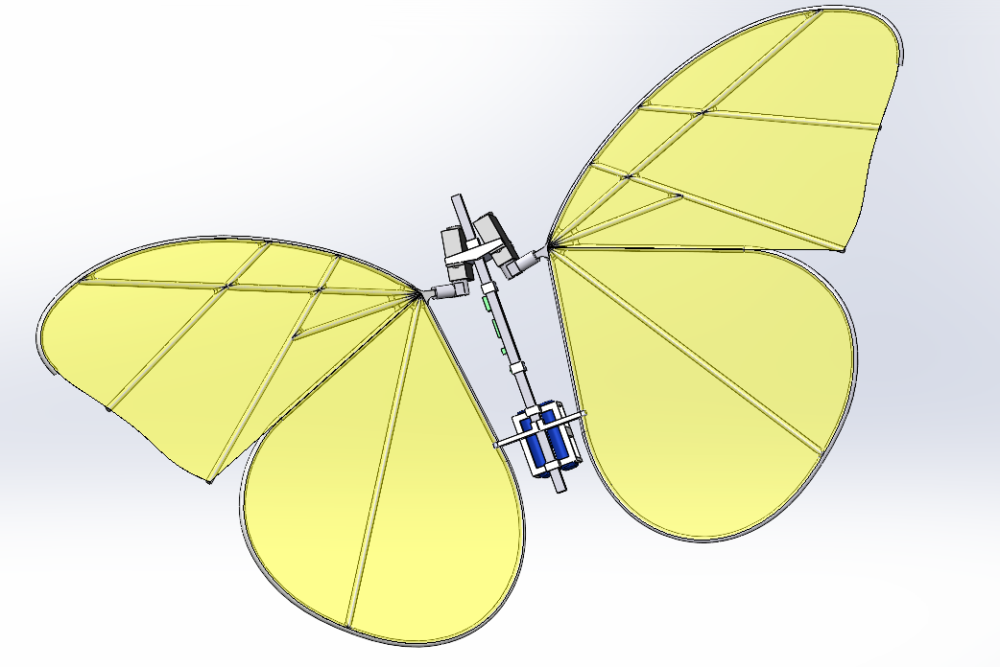
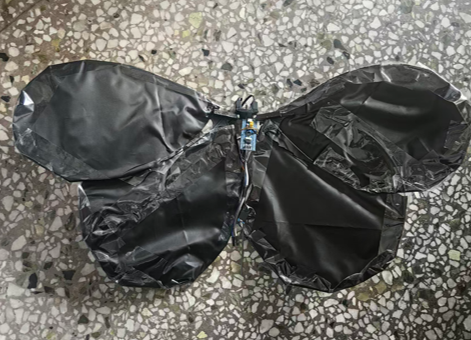

1
项目背景与需求
本项目来自机器人创新实验室（2026.04-2026.06），目标是设计一款仿生蝴蝶飞行器。通过 MPU6050 实时采集六轴姿态数据，互补滤波解算俯仰/偏航角，串级 PID 控制舵机偏转实现姿态自稳。基于 STM32F103C8T6 + A4950 电机驱动，扑翼频率 8~12Hz 可调。
功能需求
- 多路 PWM 同步驱动 A4950 + 716 空心杯电机，8~12Hz 扑翼频率可调
- DC-DC 升压模块将 3.7V 锂电池稳压至 5V 独立为 SG90 舵机供电
- MPU6050 I²C 实时回传六轴数据，互补滤波解算姿态，PID 闭环控制 ±1.5° 精度
- HC-05 蓝牙串口实现无线遥控与调试
2
系统架构 / 硬件框图
系统由主控 + IMU 姿态传感 + 蓝牙通信 + 电机/舵机驱动 + 电源管理五大模块组成：

SolidWorks 3D 建模图
关键硬件资源
| 外设/模块 | 接口 | 用途 |
|---|---|---|
| STM32F103C8T6 | — | 主控 MCU，72MHz Cortex-M3 |
| MPU6050 | I²C | 6 轴姿态传感器（3 加速度 + 3 陀螺仪） |
| A4950 ×2 | PWM | 空心杯电机驱动 |
| 716 空心杯电机 ×2 | A4950 OUT | 翅膀扑动，8~12Hz |
| SG90 舵机 | PWM | 尾部扰流片偏转（偏航控制） |
| DC-DC 升压模块 | 3.7V→5V | 舵机独立供电，保证转向力矩稳定 |
| HC-05 蓝牙 | UART | 无线遥控与调试 |
3
核心实现思路与技术亮点
姿态解算与互补滤波
MPU6050 通过 I²C 实时回传 3 轴加速度 + 3 轴陀螺仪数据（200Hz 更新率）。加速度计计算静态倾角（对振动敏感），陀螺仪积分得动态角度（有漂移），互补滤波融合两者优势。
- 高通滤波处理陀螺仪数据（滤除低频漂移）
- 低通滤波处理加速度数据（滤除高频振动噪声）
- 互补系数 α=0.98：angle = α×(angle+gyro×dt) + (1−α)×accel_angle
串级 PID 姿态控制
外环·角度环 (P)目标角度（遥控指令或 0° 自稳）与当前角度对比，输出期望角速度。
内环·角速度环 (PD)跟踪外环输出的期望角速度，快速抑制扰动，输出舵机 PWM 占空比。
±1.5° 精度参数通过串口调试助手在线整定，保存在 Flash 中，上电自动加载。
电源与驱动设计
双路供电3.7V 锂电池 → DC-DC 升压 5V 独立给舵机供电，消除舵机动作对 MCU 电源的干扰。
多路 PWM 同步TIM2 四通道 PWM 同步驱动双路 A4950，死区控制防止桥臂直通。
4
遇到的难点与解决方案
难点 1：电机振动严重干扰 MPU6050 加速度数据
现象：电机启动后，加速度计计算的倾角剧烈抖动，无法用于姿态控制
分析：扑翼 ~10Hz 振动频率落在加速度计信号带宽内，直接使用加速度倾角误差极大。
解决：互补滤波中降低加速度权重（α=0.98），以陀螺仪为主、加速度仅用于长期漂移修正。配合硬件减震（橡胶垫 + 远离电机安装 MPU6050），姿态抖动从 ±8° 降至 ±1.5°。
难点 2：舵机供电不足导致控制力矩不稳
现象：舵机与 MCU 共用 3.7V 电源时，舵机转动瞬间电压跌落，MCU 采样漂移
解决：引入独立 DC-DC 升压模块（3.7V→5V）单独给舵机供电，1000μF 电解电容并联在舵机电源端吸收瞬态电流。MCU 与传感器由 LDO 独立供电，彻底隔离动力电与信号电。
5
实物演示
实物照片

仿生蝴蝶实物
6
关键代码片段
📄 imu.c — 互补滤波姿态解算
C
/* MPU6050 + 互补滤波：融合加速度计与陀螺仪 */
#define ALPHA 0.98f // 互补滤波系数（陀螺仪权重）
#define DT 0.005f // 采样周期 5ms (200Hz)
typedef struct {
float pitch, roll, yaw;
float gyro_x, gyro_y, gyro_z;
float accel_x, accel_y, accel_z;
} IMU_Data_t;
void IMU_ComplementaryFilter(IMU_Data_t *imu)
{
// 加速度计计算静态倾角
float accel_pitch = atan2(imu->accel_y,
sqrt(imu->accel_x*imu->accel_x +
imu->accel_z*imu->accel_z)) * 57.2958f;
float accel_roll = atan2(-imu->accel_x,
sqrt(imu->accel_y*imu->accel_y +
imu->accel_z*imu->accel_z)) * 57.2958f;
// 互补滤波：陀螺仪短期精准 + 加速度长期无漂移
imu->pitch = ALPHA * (imu->pitch + imu->gyro_y * DT)
+ (1.0f - ALPHA) * accel_pitch;
imu->roll = ALPHA * (imu->roll + imu->gyro_x * DT)
+ (1.0f - ALPHA) * accel_roll;
// 偏航角仅靠陀螺仪积分（无磁力计修正）
imu->yaw += imu->gyro_z * DT;
}📄 pid.c — 串级 PID 姿态控制器
C
/* 串级 PID：外环角度 P + 内环角速度 PD → 舵机 PWM */
typedef struct {
float Kp_outer, Kp_inner, Kd_inner;
float integral, prev_error;
float integral_limit, out_limit;
} CascadePID_t;
float CascadePID_Update(CascadePID_t *pid,
float target_angle, float cur_angle, float cur_gyro, float dt)
{
// 外环：角度 P 控制器 → 期望角速度
float angle_error = target_angle - cur_angle;
float target_gyro = pid->Kp_outer * angle_error;
// 内环：角速度 PD 控制器 → PWM 输出
float gyro_error = target_gyro - cur_gyro;
float derivative = (gyro_error - pid->prev_error) / dt;
pid->prev_error = gyro_error;
float output = pid->Kp_inner * gyro_error
+ pid->Kd_inner * derivative;
// 输出限幅 (PWM: 500~2500)
if (output > pid->out_limit) output = pid->out_limit;
if (output < -pid->out_limit) output = -pid->out_limit;
return output;
}7
项目总结与个人收获
项目成果
- 实现扑翼频率 8~12Hz 可调 + 串级 PID 姿态自稳，精度 ±1.5°
- 独立双路供电方案彻底解决舵机对信号链的干扰
- HC-05 蓝牙遥控 + 串口调试，支持参数在线整定
个人收获
- 深入理解互补滤波原理及参数整定，掌握串级 PID 设计方法
- 学会了电机驱动电路设计和 PWM 死区控制，理解了电源隔离的重要性
- 积累了 MPU6050 高振动环境下的数据处理经验
- 提升了 SolidWorks 3D 建模和 DC-DC 电源设计的工程能力
后续改进方向
- 增加 BMP280 气压计实现定高飞行
- 移植到 nRF52832 平台，利用 BLE 5.0 长距离特性